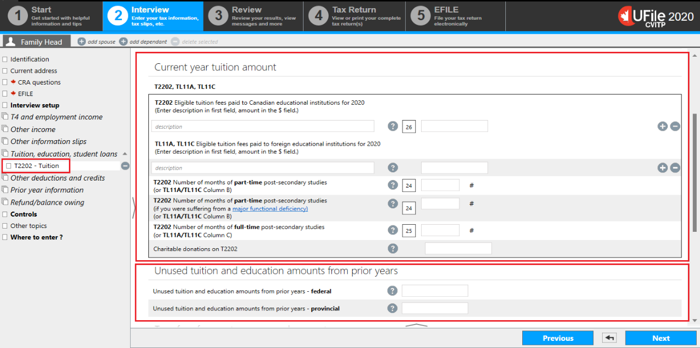
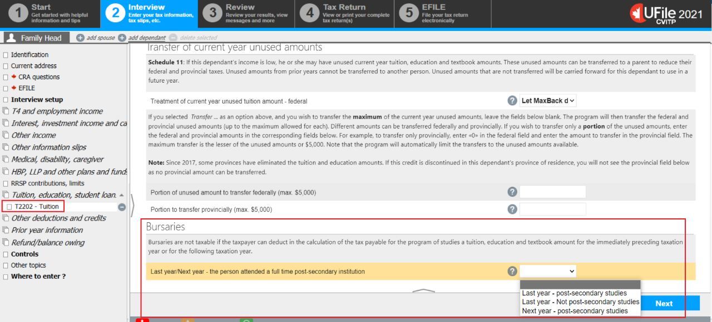

Interview setup

- select the Interview setup from the left side menu
- from the Student section, check the box next to Tuition, education, textbooks, student loans, and Canada training credit and click Next
Tuition, education, textbooks, student loans

- select Tuition, education, student loans in the left side menu
- click the + sign next to Interest paid on your student loans (line 31900)
Claiming interest paid on student loans

- for the Interest paid on a student loan only enter the interest for the current tax year
- for the years in Unused student loan interest claim the amounts from the 5 preceding years that have not already been claimed
The software may reduce the claim for interest paid on student loans since the amount entered may not be needed in its entirety to minimize the taxes. It’s important to let the student know the unused amount that can be carried forward.
- click the + sign next to Tuition amount transferred from a child whose return is not processed with yours (line 32400)
Tuition, education and textbook amounts from a child

- enter the Name of the part-time education program
- enter the Tuition fees and costs of part-time education program-related material paid for current year and click Next
- click the + sign next to Canada training credit (CTC)
Claiming the Canada training credit (CTC)

- enter the individual’s Canada training credit limit (CTCL) for 2021
- select Yes from the dropdown menu for the question Do you want to claim the Canada training credit in the current year?
- Enter the Canada training credit you are claiming. Leave blank if you want to claim the maximum amount.
- click Next
- click the + sign next to T2202 Tuition and enrolment certificate* (TL11A and TL11C) (line 32300)
- If the student was enrolled in a part-time program (in the previous, current, or next year) and received a scholarship, in addition to the previous instructions:
- select tuition, education, student loans from the left side menu
- click the + sign next to Part-time program details if you received scholarship, fellowship, and bursary income to be included at line 13010 (do not enter the information, you will do that later on)
- select T2202 - Tuition from the left side menu
- If the student was enrolled in a part-time program (in the previous, current, or next year) and received a scholarship, in addition to the previous instructions:
Tuition
Instructions for:
- current year tuition amount
- enter the information from form T2202 or the official tax receipt
Field 26: enter a description in the first field such as the name of program or course, followed by the amount in the $ field
- unused tuition and education amounts from previous years
- enter any unused federal and provincial amounts from prior years found in the most recent notice of assessment or reassessment (applies to individuals who are no longer students)
Tuition - Transfer of current year unused amounts, Bursaries
Instructions for transfer of current year unused tuition amounts:
- for the field Treatment of current year unused tuition amount - federal, select one of the following:
- Let MaxBack decide
- Carryforward to use next year
- Transfer to spouse
- Transfer to parent not processed
Ufile tip
If the individual did not specify how they wish to use their unused tuition amounts, choose Let MaxBack decide.
Let MaxBack decide will provide the most advantageous calculations overall for all family members, if applicable. However, this could result in the student keeping all their own amounts, with no tuition being transferred.
Note
If the individual chooses the Transfer to spouse option, you will need to file the spouse’s return if the spouse is present. If the individual chooses the Transfer to parent not processed option, you will not need to prepare the parent or grandparent’s return.
- enter the amount the student is willing to transfer; leave blank if they want to transfer the maximum amount, $5,000
Bursaries
Instructions for individuals who received bursaries:
- full time students:
- in the current year
- do not complete this section
- last year or next year
- from the drop down menu select the answer that represents the individuals situation
- in the current year
- part time student
- in the current year
- do not complete this section
- last year or next year
- from the drop down menu select the answer that represents the individuals situation
- in the current year
Interview setup - Pensions and saving plans
I'm not sure how this connects? Does it just start at the Interview setup?
Scholarship and bursary income - Part-time student

- enter the Name of the part-time education program
- enter the Tuition fees and costs of part-time education program-related material paid for current year and click Next
Interview setup - Pensions and saving plans
I'm not sure how this connects? Does it just start at the Interview setup?